The aim
Aether started as a way to see how clearly I could direct AI tools, and how well different AI systems could work together to produce an interface with real craft. The product is built around three things sharing one surface: a sidebar for past conversations, a chat area that replies in calm prose, and a Plan view that fills in from what the user says in chat.
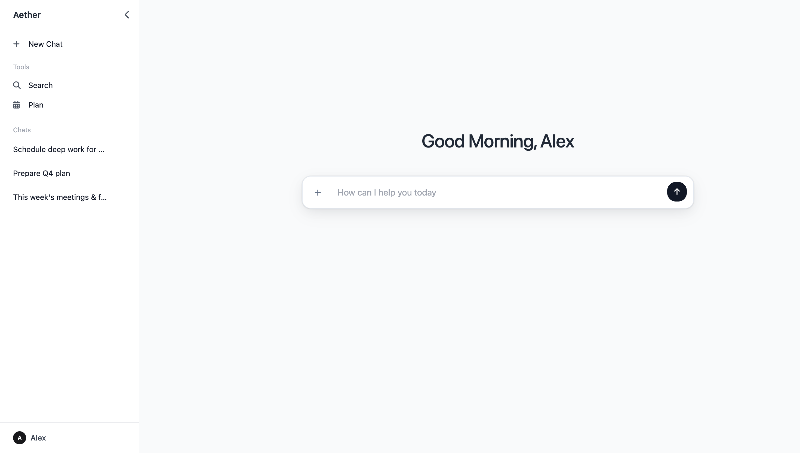
Chat that stays calm
The chat area replies in plain prose rather than noisy bubbles and dense controls. Keeping the reply quiet makes the assistant feel like a companion you think out loud with, instead of a tool that demands to be managed.
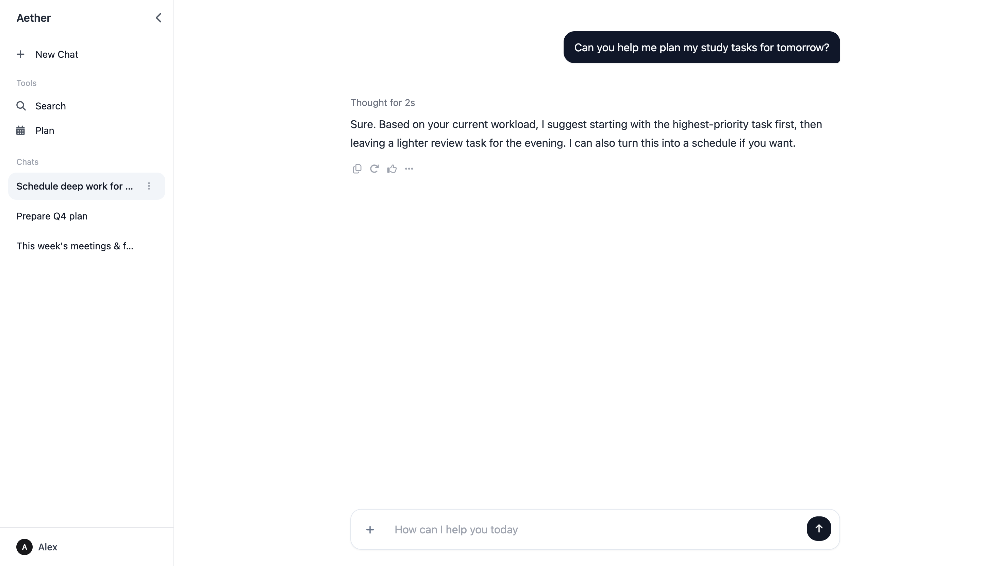
Plan view: space follows attention
The obvious way to lay out Today, Tomorrow, and This Week would be three equal columns. I gave Today (Next) 50% of the space, while Tomorrow and This Week each take 25%.
The reasoning is about attention, not symmetry. On any given day, now is the only section the user directly acts on — the rest is mostly context to glance at. Equal columns would imply all three matter equally, which doesn't match how a day is actually lived. So the layout gives most of its space to now.
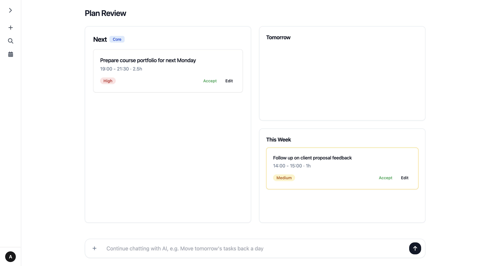
No form to fill
I avoided a traditional "create schedule" flow. Without AI, adding to a plan means clicking new event, choosing a time, typing a description, picking a date — that works, but it adds friction.
The principle: the interface shouldn't ask for structured input when natural language already contains the structure. The user types their schedule into the chat, and the app places it into Next, Tomorrow, or This Week — no separate task-creation flow that repeats the same information.
Putting things where they belong
I reworked the sidebar's information architecture so primary actions — New Chat and Search — sit apart from the history of past conversations, and refined the icons so the hierarchy reads at a glance. Long chat titles truncate with an ellipsis and reveal the full title on hover, keeping the list scannable without permanently hiding information.
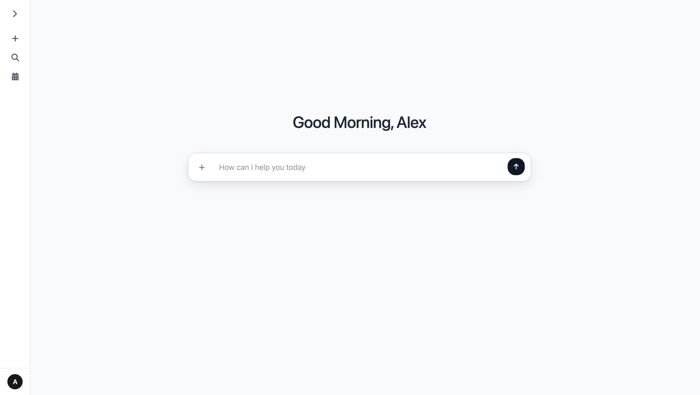
The small states that make it feel better
A lot of the "finished" feeling comes from small states people may not consciously notice. The cursor only becomes a pointer on things that are actually clickable, so the interface stays honest about what it affords. New Chat, Search, and Plan each show a tooltip on hover, so icon-only controls stay understandable without adding visible labels. The whole interface is reachable by keyboard through ⌘S search.
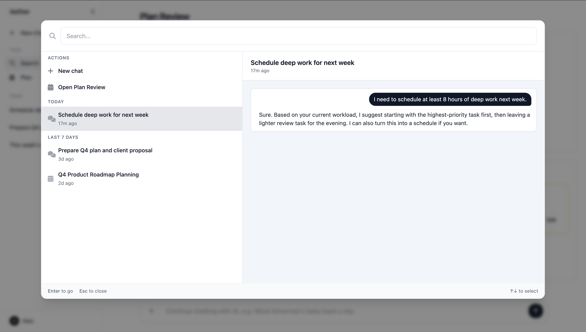
The landing page
The landing page follows the same principle as the app: restraint and minimalism, in service of directing attention to the content. To check whether it worked, I tested the flow with two people and watched where their behaviour differed from what I expected. Three findings shaped the next iteration.
Finding 1 — the demo worked too well
The first screen put the inline demo front and centre. Both testers went straight to it, interacted, and then assumed the page ended there; one opened the product without scrolling further. In one sense that's a successful conversion, but they missed the sections explaining the thinking behind Aether — the first screen didn't signal that there was more content below.
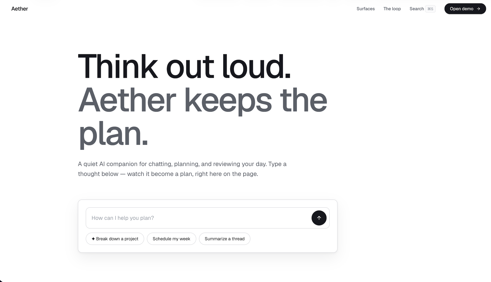
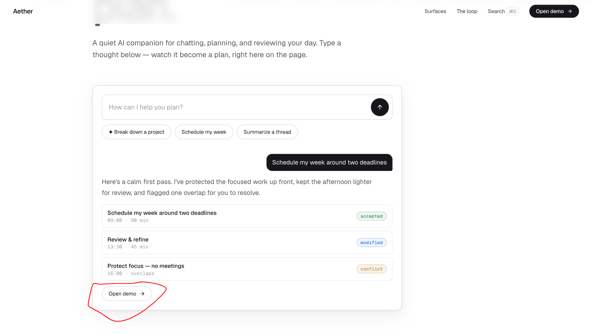
The change: rework the first screen toward a Linear-style opening — a title with the top of the real app already visible. When only part of the interface shows, it feels cut off and pulls the eye down. The interactive demo moves to the second screen, so it's still the payoff but no longer a stopping point too early.
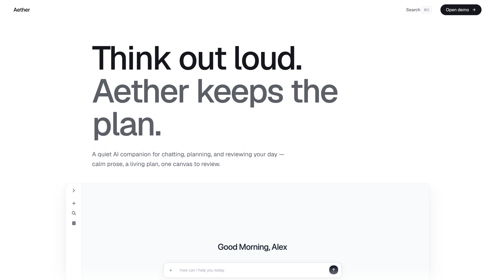
Finding 2 — conflicting signals about what was clickable
One list had no container; despite a consistent hover dot, a tester didn't read it as clickable. Elsewhere, a card with a visible border got clicked even though it only displayed content. These weren't two separate issues — they were the same affordance problem from opposite directions. Across the page, the border had quietly become the signal for "interactive," so the bordered display card over-promised while the border-less list under-promised.
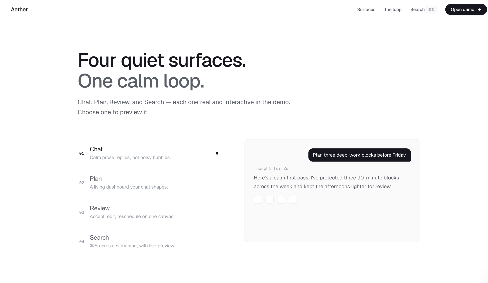
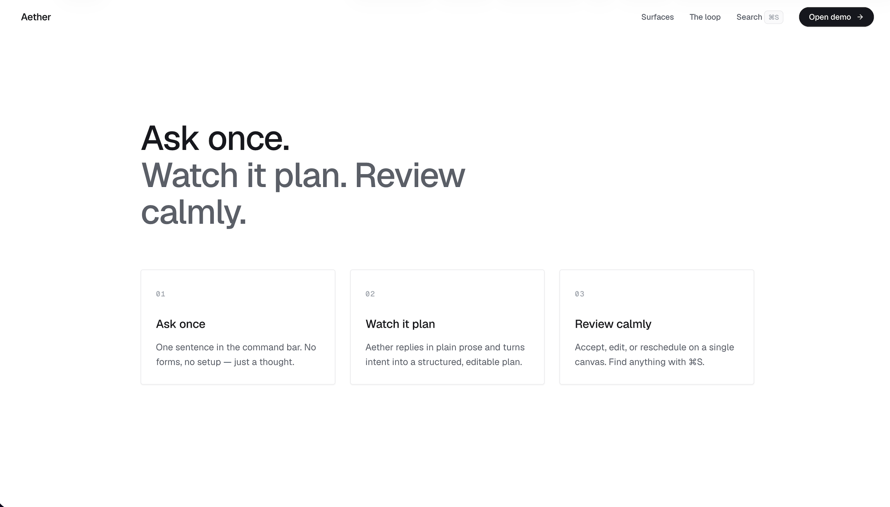
The change: make clickable and display-only elements read as clearly different categories, and keep that affordance consistent across the whole page instead of contradicting it from one screen to the next.
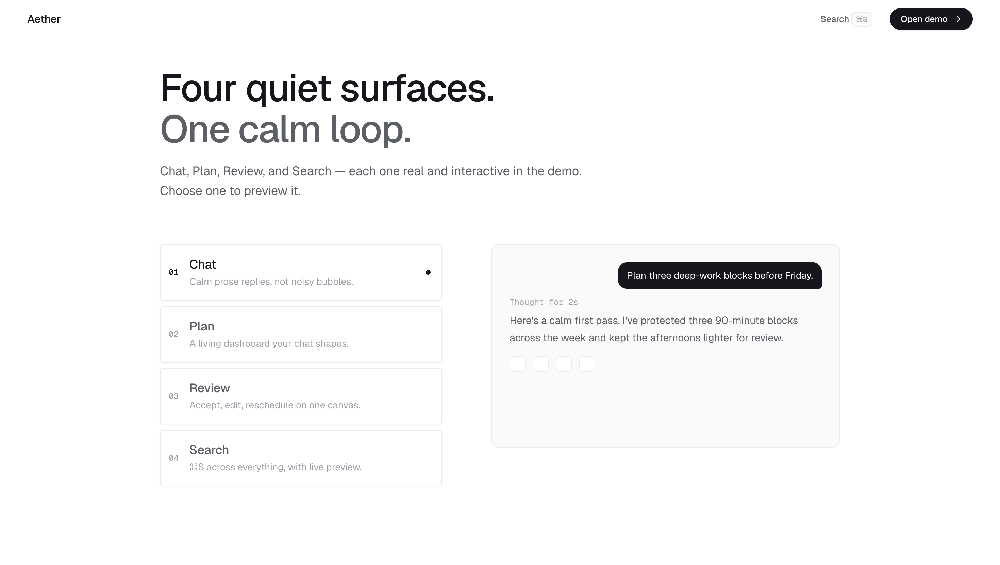
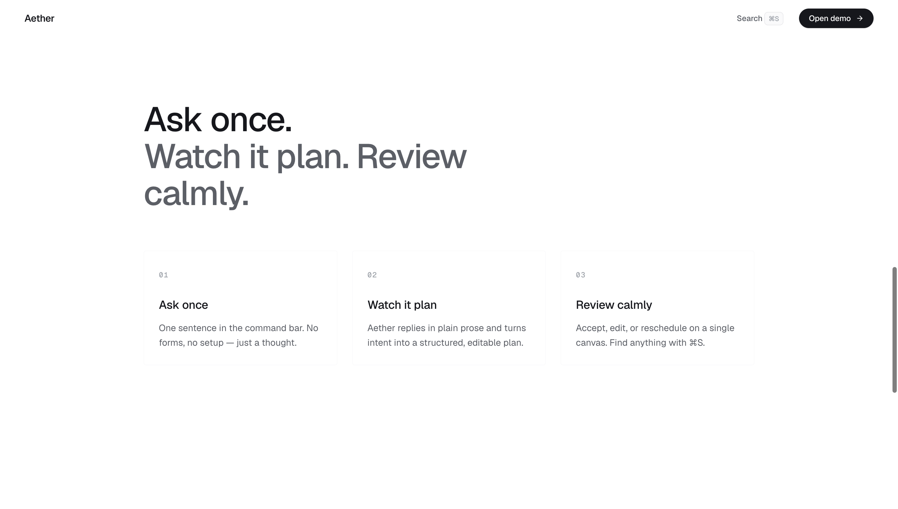
Status
A personal exploration, not a shipped product.